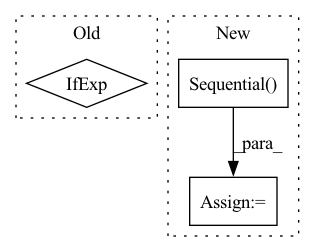

Pattern ID :23594
Before Change
nn.ReLU(),
nn.Linear(m_dim * 4, 1),
Rearrange("... () -> ..."),
nn.TanH() if norm_coor_weights else nn.Identity()
)
self.rel_coors_norm = CoorsNorm() if norm_rel_coors else nn.Identity()After Change
self.rel_coors_norm = CoorsNorm() if norm_rel_coors else nn.Identity()
self.to_coors_out = nn.Sequential(
nn.Linear(heads, 1),
Rearrange("... () -> ...")
)
self.init_eps = init_eps
self.apply(self.init_)
In pattern: SUPERPATTERN
Frequency: 3
Non-data size: 3
Instances Fragment ID: 73815074
Project Name: lucidrains/en-transformer
Commit Name: af1cb7ebc156c67f0938d915840e079bb3073c24
Time: 2021-03-27
Author: lucidrains@gmail.com
File Name: en_transformer/en_transformer.py
M Class Name: EquivariantAttention
N Class Name: EquivariantAttention
M Method Name: __init__(1)
N Method Name: __init__(1)
M Parent Class: nn.Module
N Parent Class: nn.Module
M File Name: en_transformer/en_transformer.py
N File Name: en_transformer/en_transformer.py
M Start Line: 151
M End Line: 155
N Start Line: 151
N End Line: 162
Before Change
def build(self, input_shape):
pool_size = self.pool_size
if isinstance(self.padding, str):
pad = (pool_size[0] // 2, pool_size[1] // 2) if self.padding.upper() == "SAME" else (0, 0)
else: // int or list or tuple with specific value
pad = padding if isinstance(padding, (list, tuple)) else (padding, padding)
self._pad = padAfter Change
module = nn.AvgPool2d(kernel_size=self.pool_size, stride=self.strides, padding=pad, count_include_pad=False)
if isinstance(self.padding, str) and self.padding.upper() == "SAME":
self.module = nn.Sequential( SamePadding(kernel_size=self.pool_size, strides=self.strides, ndims=2), module)
else:
self.module = module
super().build(input_shape)
Fragment ID: 73815073
Project Name: leondgarse/keras_cv_attention_models
Commit Name: d562ca7add8b907797fd0d69903f7eb0bbf2340c
Time: 2023-02-09
Author: leondgarse@gmail.com
File Name: keras_cv_attention_models/pytorch_backend/layers.py
M Class Name: Pooling2D
N Class Name: Pooling2D
M Method Name: build(2)
N Method Name: build(2)
M Parent Class: Layer
N Parent Class: Layer
M File Name: keras_cv_attention_models/pytorch_backend/layers.py
N File Name: keras_cv_attention_models/pytorch_backend/layers.py
M Start Line: 779
M End Line: 789
N Start Line: 810
N End Line: 826
Before Change
ConvOut1d(
channels=out_channels,
kernel_sizes=kernel_sizes_out,
)
if exists(kernel_sizes_out)
else nn.Identity(),
)
def get_channels(After Change
if use_context_features:
assert exists(context_features) and exists(context_mapping_features)
self.to_features = nn.Sequential(
nn.Linear(
in_features=context_features, out_features=context_mapping_features
),
nn.GELU(),
)
self.downsamples = nn.ModuleList(
[
DownsampleBlock1d( Fragment ID: 73815071
Project Name: archinetai/audio-diffusion-pytorch
Commit Name: 3c710edf168da06dcc89c23ef12023d0f8b63043
Time: 2022-09-21
Author: flavio.schneider.97@gmail.com
File Name: audio_diffusion_pytorch/modules.py
M Class Name: UNet1d
N Class Name: UNet1d
M Method Name: __init__(23)
N Method Name: __init__(21)
M Parent Class: nn.Module
N Parent Class: nn.Module
M File Name: audio_diffusion_pytorch/modules.py
N File Name: audio_diffusion_pytorch/modules.py
M Start Line: 823
M End Line: 938
N Start Line: 842
N End Line: 997